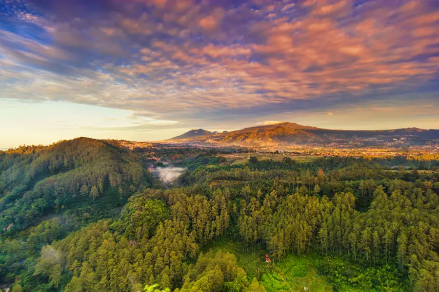
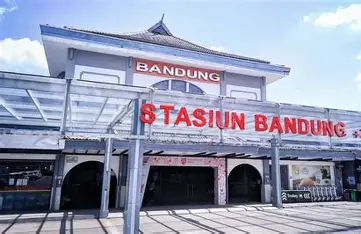

Timeline SejarahPerjalanan Kota Bandung
 1810
1810
Bandung Resmi Didirikan
Pada tanggal 25 September 1810, Bandung resmi didirikan oleh R.A. Wiranatakusumah II atas perintah Gubernur Jenderal Herman Willem Daendels. Pusat pemerintahan kemudian dipindahkan ke lokasi yang lebih strategis di dekat Jalan Raya Pos. Tanggal tersebut kini diperingati sebagai hari jadi Kota Bandung dan menjadi awal perkembangan kota yang kelak dikenal sebagai salah satu pusat budaya dan pendidikan di Indonesia.

1884Jalur Kereta Api Hadir
Kehadiran jalur kereta api yang menghubungkan Bandung dengan berbagai wilayah di Pulau Jawa membawa perubahan besar bagi pertumbuhan kota. Transportasi menjadi lebih cepat dan efisien sehingga aktivitas perdagangan, perkebunan, serta mobilitas penduduk meningkat pesat. Perkembangan ini menjadikan Bandung sebagai salah satu kota penting di Hindia Belanda.
 1920-an
1920-an
Paris van Java
Pada awal abad ke-20, Bandung mengalami perkembangan pesat dalam bidang arsitektur, pendidikan, dan gaya hidup masyarakat. Banyak bangunan bergaya Art Deco dibangun pada masa ini, sementara kawasan seperti Braga menjadi pusat hiburan dan perdagangan. Keindahan tata kota serta suasana yang modern membuat Bandung mendapat julukan terkenal, yaitu "Paris van Java".
 1955
1955
Konferensi Asia-Afrika
Bahun 1955 menjadi salah satu momen paling bersejarah bagi Bandung ketika kota ini menjadi tuan rumah Konferensi Asia-Afrika. Acara tersebut dihadiri oleh perwakilan dari 29 negara Asia dan Afrika yang baru merdeka maupun sedang memperjuangkan kemerdekaan. Konferensi ini memperkuat solidaritas antarbangsa dan menjadikan Bandung dikenal di tingkat internasional.
 Sekarang
Sekarang
Kota Kreatif Indonesia
Saat ini Bandung dikenal sebagai salah satu kota kreatif terkemuka di Indonesia. Kota ini menjadi pusat pendidikan dengan hadirnya berbagai perguruan tinggi ternama, sekaligus berkembang sebagai destinasi wisata, kuliner, dan industri kreatif. Berbagai inovasi di bidang teknologi, desain, dan seni terus berkembang, menjadikan Bandung tetap relevan dan menarik bagi generasi muda maupun wisatawan.